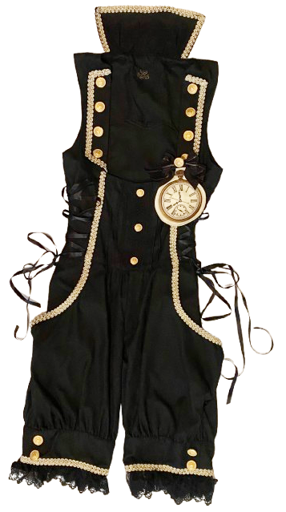
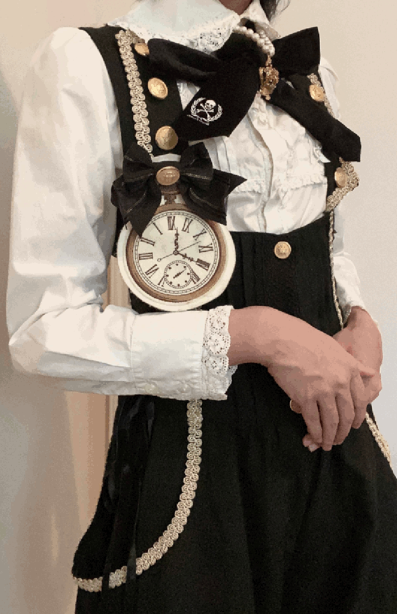
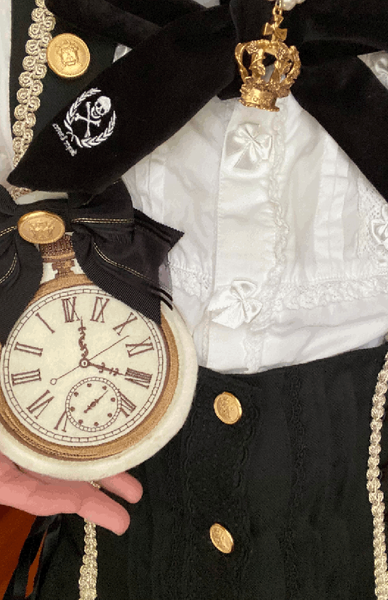
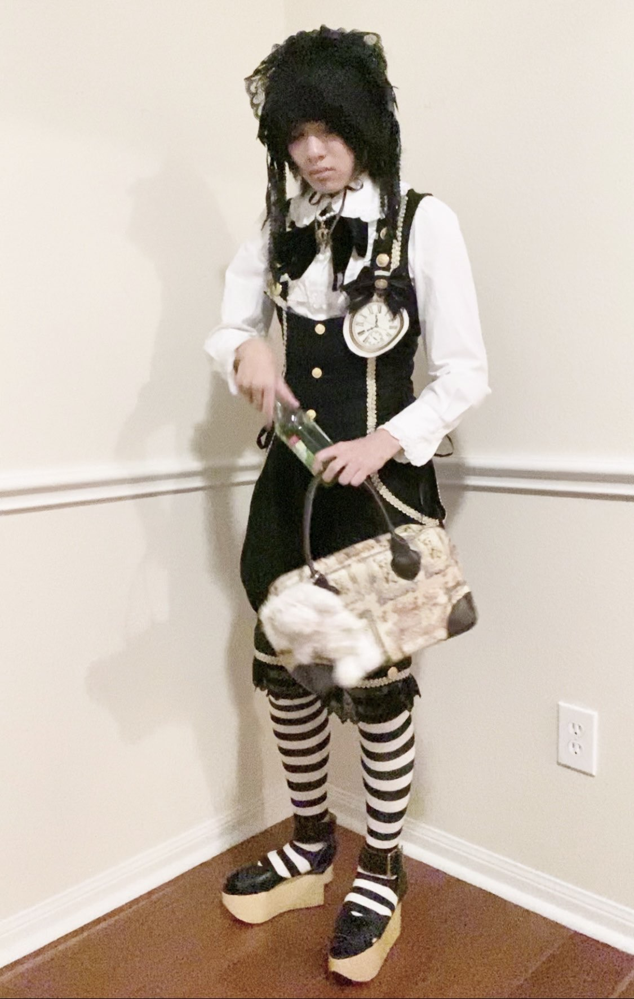
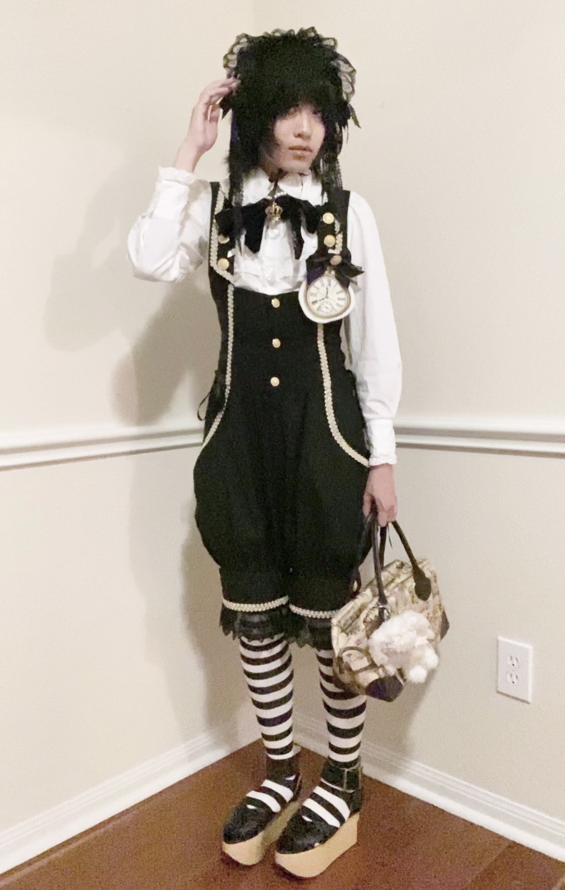
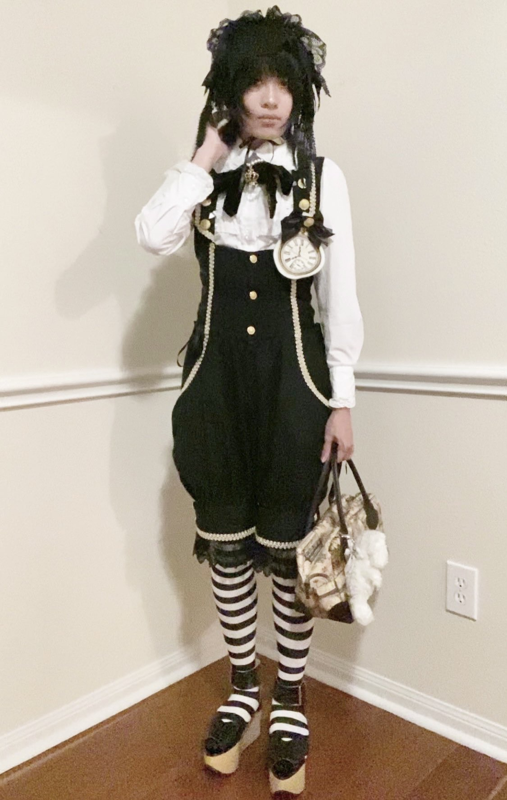
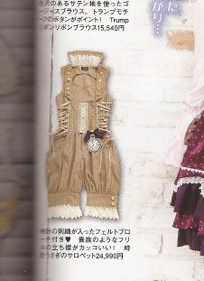

White Rabbit Salopette
|  |
Brand:Alice And The Pirates Web Documentation: |
2025.11.30Most AATP productions are designed for gothic taste, but they'll occasionally release items that lean more into the youthful themes and かわいい iconography of ouji. The apple doesn't fall far from the tree. With WRS, its theme is the Rabbit's pocketwatch. I think "sweet" is distinct from gothic ouji by construction and texture regardless of colors as many have been lead to believe. Even though it's black, it's not sleek nor regal like the common goth ouji. Sweet ouji does not need texture to be striking. When it strikes, it does so by invoking pop culture such as Alice In Wonderland. That being said, WRS is a very soft and resilient piece with a breathable rayon-poly blend (so yes, I wear it during the summer.) |

